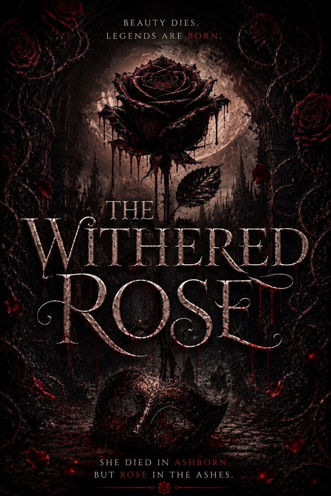
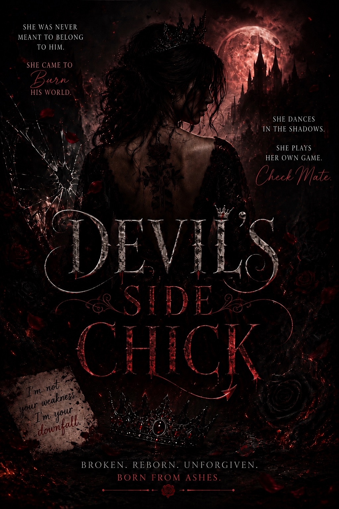

Works in Progress

The Withered Rose
Rose Sinclaire thought the storms haunting Ashborn were nothing more than part of growing up in a mountain town where fog clung to the forests and old stories never truly died.
Now living a quiet life with her husband and twin daughters, Rose wants nothing more than normalcy. But when strange figures begin appearing beyond the tree line and unsettling events creep closer to home, she discovers some secrets refuse to stay buried.
In Ashborn, the storms are watching.
Tagline: Beauty Dies. Legends Are Born.

Devils Side Chick
Rose Sinclaire was never meant to survive.
For years, she was everything everyone needed her to be. Quiet when it was easier. Forgiving when she shouldn't have been. Carrying burdens that were never hers until there was barely anything left of herself beneath the weight of them.
Then everything changed.
The woman who once spent her days holding her family together now finds herself in a world she barely recognizes, where power is earned, loyalty is tested, and revenge is never as simple as it seems. As old wounds reopen and new threats begin closing in, Rose learns that protecting the people she loves may require becoming someone she never wanted to be.
This time, she is no one's victim, no one's pawn, and certainly no one's side chick.
Devils Side Chick is a dark fantasy about rebirth, resilience, and what remains when a woman finally stops making herself smaller for everyone around her.
Theme: Revenge, rebirth, magic, and the woman who refuses to stay buried.